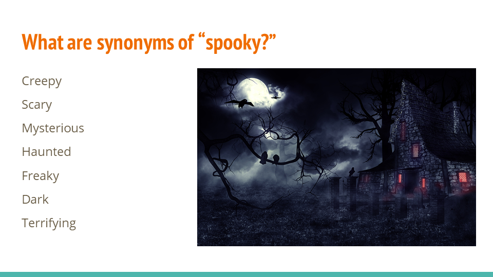
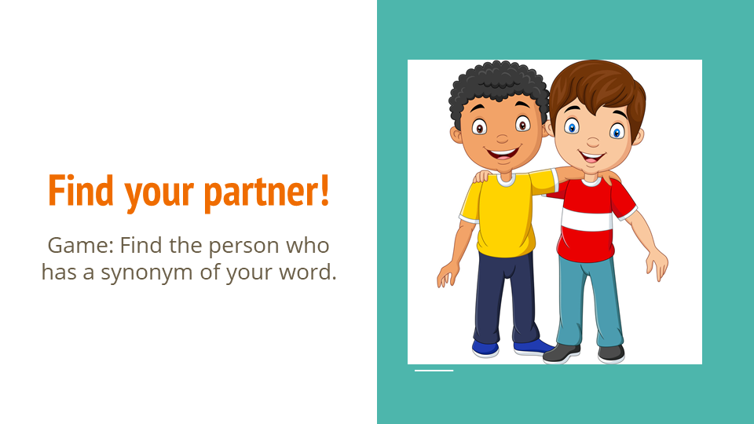
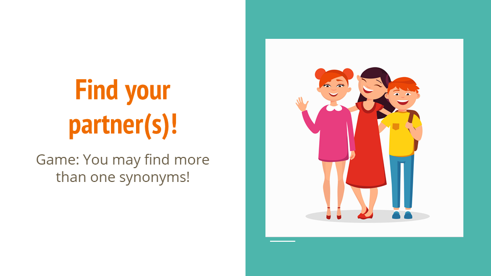
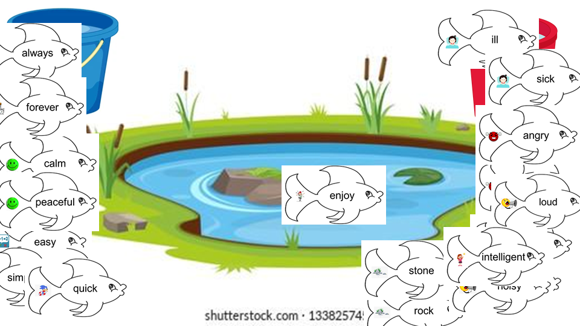
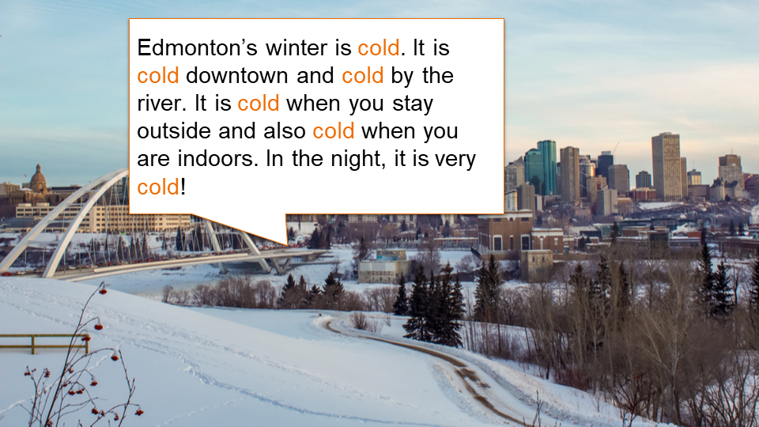
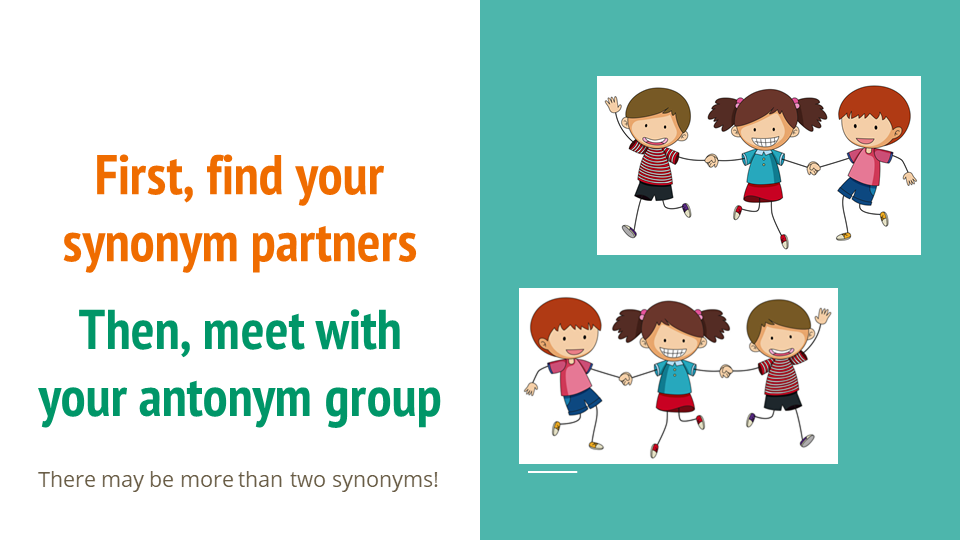

。Clinical Resources
<< Grade 5/6 Literacy Class: Synonyms
I developed several literacy lessons for grade 5 and 6 students with diverse language and speech needs, in conjunction with my clinical educator. Students can learn about synonyms through reading, discussion, drill practice, and interactive group games. Resources from the internet were linked in the corresponding slides. The whole package of lessons can be downloweded here.
In the first lesson, I guided the students to read a book about synonyms. Through the guided reading, the students not only saw a lot of examples of synonyms but also practiced their reading skills. Then the students were asked to generate synonyms for a simple word. I picked "spooky" during my teaching, because it was around the time of Halloween. The older students were highly motivated by this topic. Last, I gave each student with a word card and asked them to walk around the classroom to find the other students who were holding a synonym of their word. At the end of the lesson, the students went in pairs to introduce their word pairs, so each student got a turn to participate. The synonym word cards can be downloweded here.
 
In the second lesson, we first reviewed what synonyms were through multiple-choice questions. Then I introduced "the shade of meanings" so the students understood that a word might have more than one synonyms with different intensities of their meanings. The students played the same matching games to find their partners, but this time, they might form a group bigger than two. Last, the class was divided into two teams to play a fishing game where they used the word cardd in their hands to "fish" the words that I flipped from the deck. One could also fish within their own team by declaring their word, but this put them at the risk of being fished by the opponent team. The team who had the most fish in their bucket was the winner. Through this game, the students needed to quickly recognize synonyms and could also practice their social skills. Moreover, the students were asked to write their words on a large piece of paper hanging in the front of the classroom, which also gave them the opportunity to practice writing. The fish cards and play boards can be downloaded through the links.
 
In the third lesson, students learned to use synonyms to replace repetitive words in 2 paragraphs. Students were encouraged to discuss how synonyms helped them improve their writing. Then, students reviewed what synoym and antonym were. They played the same matching game as the one in the first and second lessons. This time, they looked for their synonym partners and then looked for their antonym groups. Students went in groups to introduce their synonyms and antonyms, so each student got a turn to participate. The synonym and antonym word cards can be downloaded here.
 
Should you have any questions regarding this activity, please feel free to contact me.